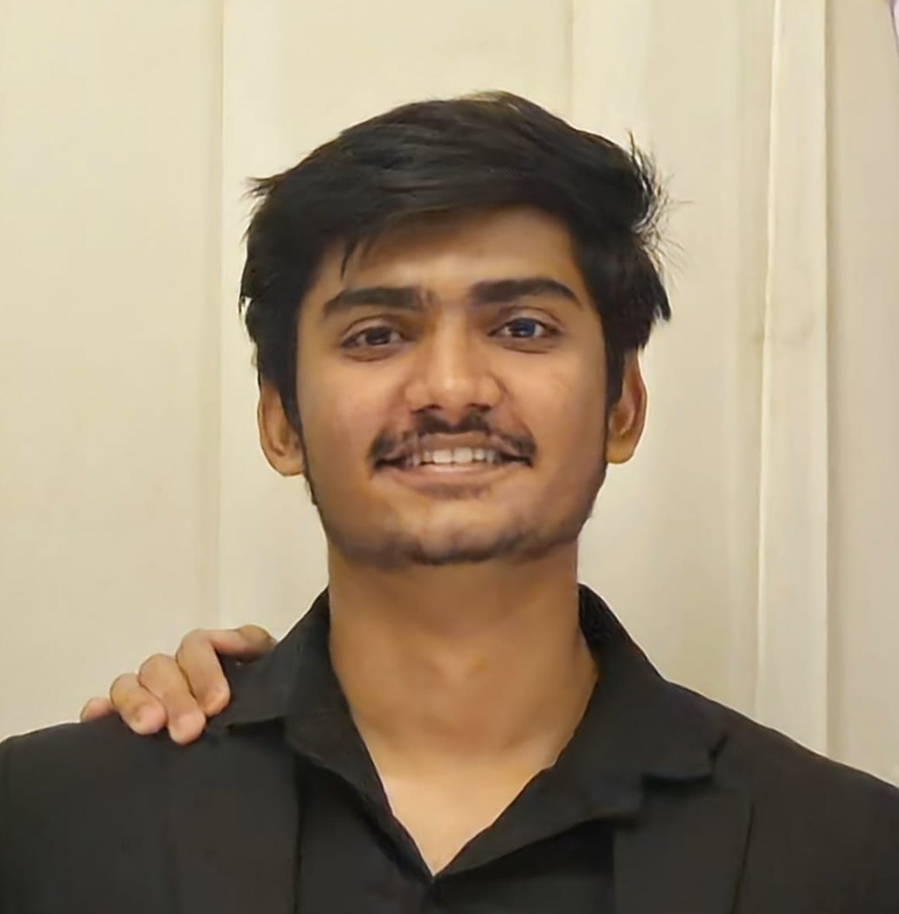

Indian Institute of Management Bangalore (IIMB)
Bachelor of Business Administration (BBA) — Digital Business & Entrepreneurship
Expected Graduation:

BBA Candidate @ IIMB & BMCC | CA Foundation Candidate
Shivajinagar, Pune, India • +91-8668639717 • parasbhadane3689@gmail.com
Driven undergraduate business student pursuing dual degrees in Digital Business & Entrepreneurship at IIM Bangalore and Finance at Brihan Maharashtra College of Commerce (BMCC), alongside Chartered Accountancy (CA Foundation) preparation. Passionate about combining financial acumen, business strategy, and foundational web development to build impactful digital solutions.
Bachelor of Business Administration (BBA) — Digital Business & Entrepreneurship
Expected Graduation:
Chartered Accountancy (CA) — Foundation Candidate
Target Exam Date:
Bachelor of Business Administration (BBA) — Finance Specialisation
Expected Graduation:
Status as of
Currently focused on undergraduate coursework in Finance and Digital Business alongside CA Foundation preparation. Actively seeking entry-level internships in finance, business analytics, and digital operations.
| Focus Area | Core Competencies | Status & Timeline |
|---|---|---|
| Web Development | Semantic HTML5, CSS3 Styling, Responsive Layouts, GitHub Pages | Active (2026) |
| Finance & Accounting | Corporate Finance Fundamentals, Accounting Principles (CA Foundation) | In Progress (Target: Jan 2027) |
| Digital Business & Entrepreneurship | Digital Strategy, Business Modeling, Market Research | Building through May – July 2028 |